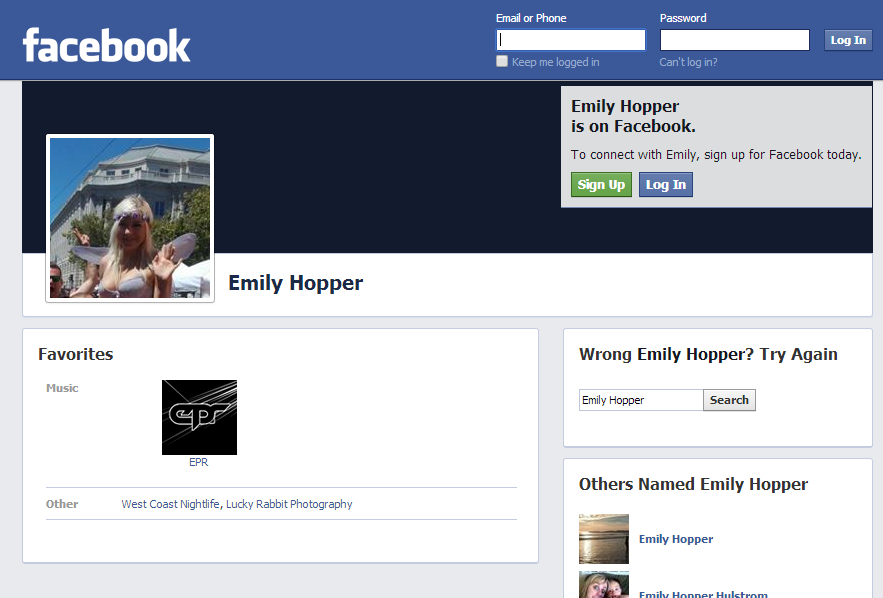
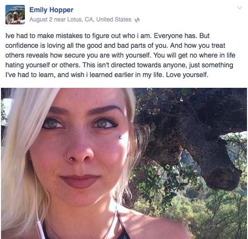

Daryush "Roosh" Valizadeh created ROK in October 2012. You can visit his blog at RooshV.com or follow him on Twitter and Facebook.


Two anti-circumcision protesters were assaulted this summer during a gay pride parade in San Francisco by a woman later identified as Emily Hopper. She was dressed as a fairy during the assault. You can watch it take place in the following video:
0:25: Emily is in view on the right side of the screen
0:30: She notices the protester’s sign and begins to have an emotional reaction
0:36: She mimics the finger-snap behavior of an urban female youth to show her intolerance of a dissenting opinion
0:41: She makes physical contact with the photographer, who has the legal right to film in a public space
0:43: Her hand was removed from the camera and she responds physically
0:58: White knight in green skirt attempts to come to her rescue
1:05: She continues her assault against protester signage
1:12: Another white knight comes in
1:18: She punches one of the protesters in the nose and then shoves him
1:31: She displays even more unbridled aggression
Here is photographic evidence that the woman in the video is indeed Emily Hopper:


Some additional photos that are slightly NSFW can be found here.
A day after her identity was made public, she posted a response video on Youtube showing a healthy amount of cleavage while laying in bed wearing the same fairy costume. Predictably, she plays the damsel-in-distress angle that doesn’t quite jive with we see in the above video. She also lies about being a teenager when she’s actually in her mid 20’s.
Would you bang?
Anti-circumcision is not a cause that ROK fights for, but nonetheless the protesters have legal protections granted by American law to protest and film in a public space without being physically assaulted. This isn’t the first time that a feminist tried to silence a protester with violence. Earlier this year, UCSB feminist studies professor Mireille Miller-Young physically assaulted pro-life protesters after stealing their sign.
Miller-Young actually blamed slavery as the reason for her assault. I must remind you that slavery has not taken place on American soil within the past 149 years. She was rightfully arrested, charged, and given a sentence of 100 hours of community service. Emily also needs to be punished for her crime, because if a man attacked a feminist protester at a pro-choice jubilee, he would be arrested within an hour.
Why is Emily given a pass to break the law when such “privilege” to use violence is never given to men? If you believe that she should pay for her crime, contact the San Francisco District Attorney’s Office with your concern that a violent member of the community is still loose on the streets.
The ROK staff disagrees on many issues with feminists, but we have never attempted to use violence to shut down opinions we don’t like. America is a country founded upon the principle of free speech, even speech which has no basis in fact, logic, or reality. Unless we start severely punishing people like Emily Hopper and Mireille Miller-Young, we allow leftist activists to use intimidation, threats, and outright violence to erode our right to free speech.
As much as the left preaches tolerance and acceptance, their movement has shown to be dangerously intolerant. They’ve apparently gone mad with the gains they’ve made in the past ten years. By publicizing cases involving violent individuals like Emily Hopper, we hope that other leftists think twice about using their fists to show disagreement.
Read Next: Female University Student Carries Around Mattress She Was “Raped” On